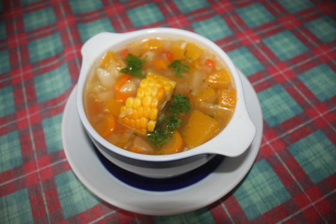

Vegetarian Sancocho

Description:
An interesting version of a colombian dish, sancocho!
Ingredients
- 2 tablespoons of butter
- 1 yellow onion, chopped
- 2 yuca (cassava) roots, pelled and cut into 1-inch cubes
\
- 2 Yukon Gold potatoes, cut into 1-inch cubes
- 2 red potatoes, cut into 1-inch cubes
- 2 plantains - peeled, sliced into thirds lengthwise, and cut into strips
- 2 ears yellow corn, husked and cut into thirds
- 1 bunch green onion, chopped
- Lemon, juiced
- 1 bunch of cilantro, chopped, divided
- 3 cloves of garlic
- 1/4 teaspoon paprika, or to taste
- Salt and ground black pepper to taste
- 2 avocados, sliced
Steps
- Melt butter in a large pot over medium-high heat. Saute onion until translucent, about 5
minutes. Pour in vegetable stock and bring to a boil.
- Reduce heat to medium-low. Combine yuca, Yukon potatoes, and red potatoes in the pot; simmer
until softened, about 15 minutes. Stir in plantains and corn, simmer until tender, about 20
minutes. Add green onion, lemon juice, 1/2 of the cilantro, garlic, and paprika. Season with
salt and pepper. Simmer soup until flavors are well combined, about 5 minutes.
- Pour soup in serving bowls and garnish with avocado and the remaining cilantro.